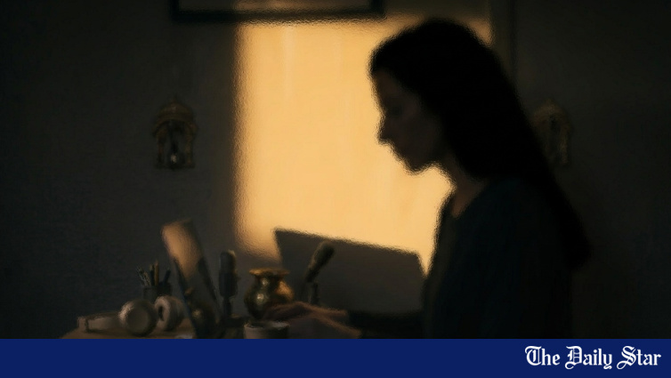
What else must women do?
A woman’s profession should not depend on a politician’s religious expectations
Rights, gender, labour, children, minorities and access to justice.

A woman’s profession should not depend on a politician’s religious expectations
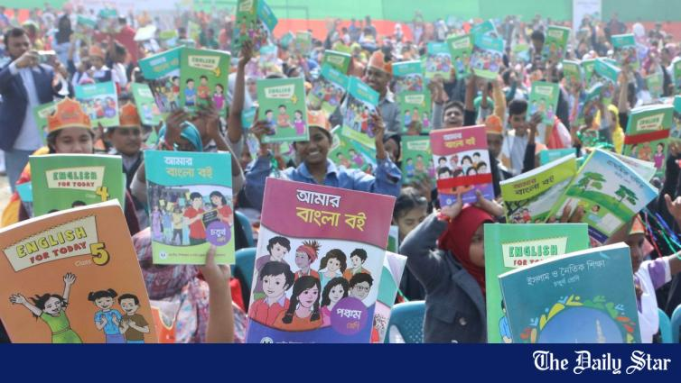
As the government aims to raise the country’s literacy rate to between 86 and 90 percent by 2030, nearly half of children aged seven to 14 still fail to read and understand a simple story.
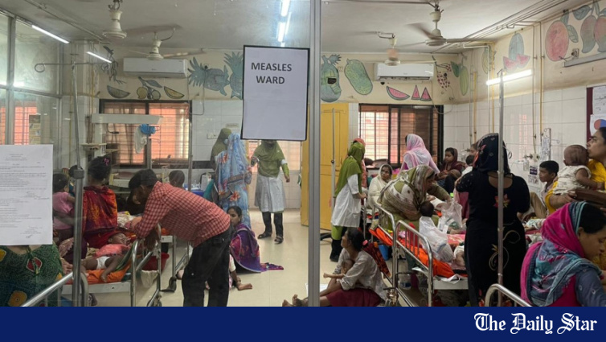
Measles continues to ravage our children and with them their faimilies
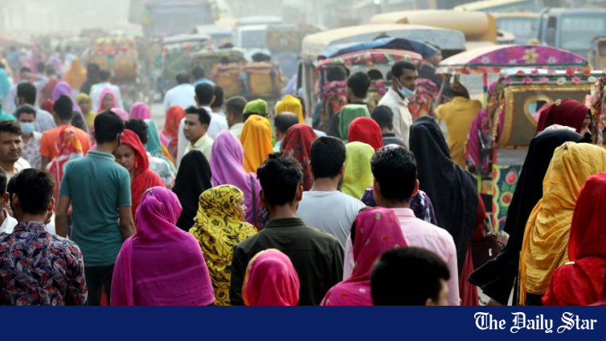
When planning fails selectively, and always in the same direction, always at the worker's expense -- it is no longer a planning problem.
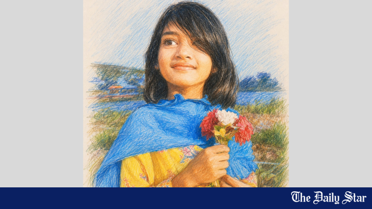
Ramisa’s murder must not become another passing outrage
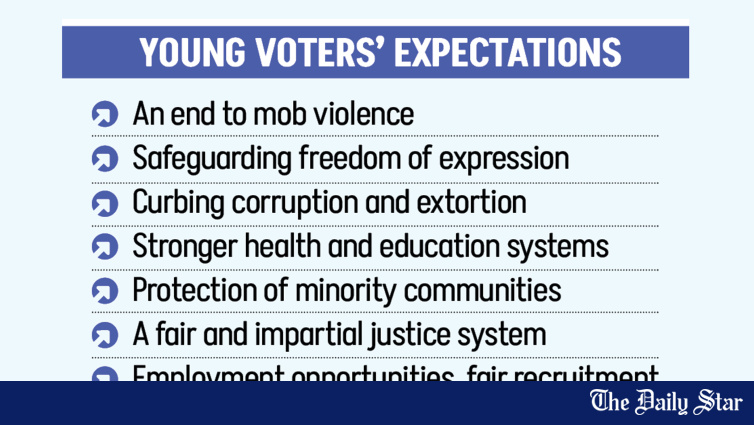
Young voters want citizens’ safety and security at core of their election manifestos, with special focus on safeguarding freedom of expression and protecting rights of minority communities
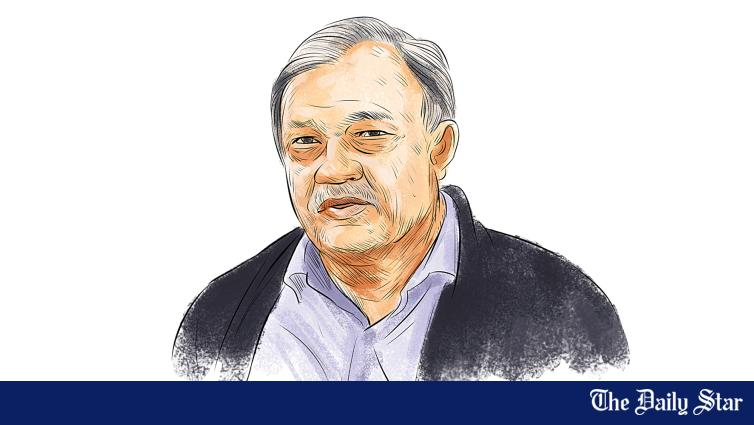
Years of political hostility and the misuse of state agencies have kept political violence alive in Bangladesh, and only a newly elected government with the goodwill to act can break this cycle, said human rights activist Nur Khan Liton.
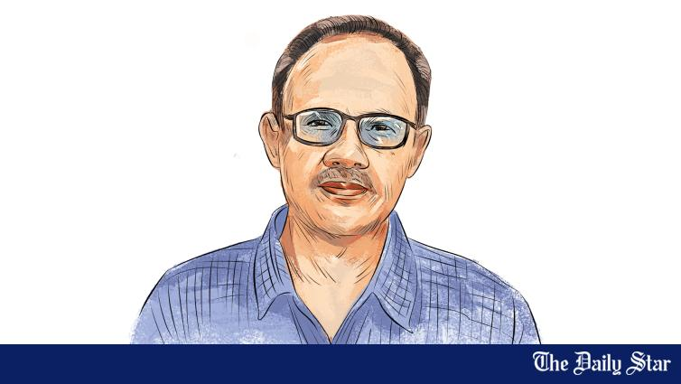
Bangladesh now needs a government prepared to confront long-standing issues such as custodial torture, extrajudicial killings, and border violence instead of repeating earlier patterns of inaction, rights activist ASM Nasiruddin Elan has said.
Silence tells women that even when men see the harm, they will not intervene.
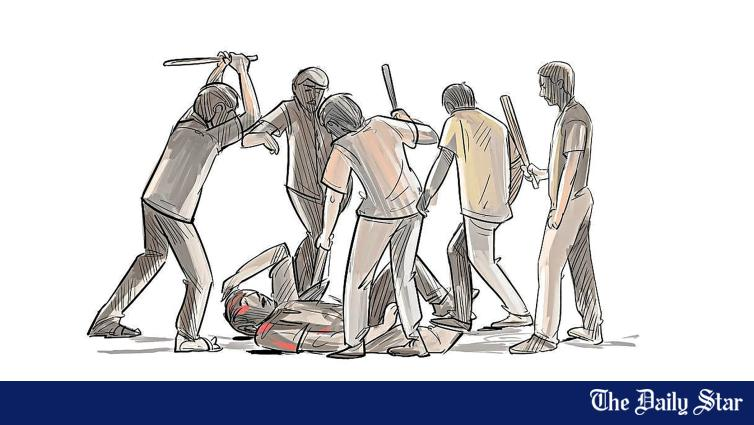
Rights groups say the state's failure to act swiftly and decisively has to some extent emboldened mobs and contributed to a climate where vigilante justice is becoming commonplace.
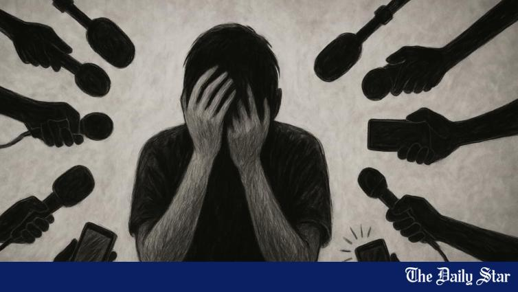
It was supposed to be a routine traffic stop. Two women on a motorbike were stopped in Hatirjheel for not wearing helmets
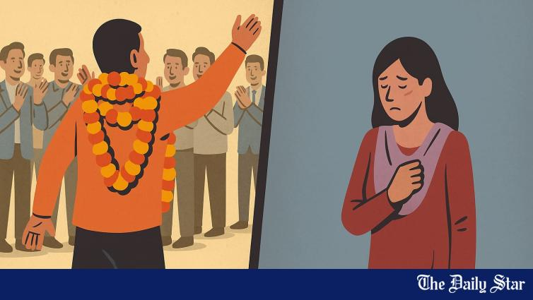
In Bangladesh, one does not need to teach a generation, invent a cure for a disease, feed the hungry, or fight for justice to be honoured. In this country, respect comes cheaper
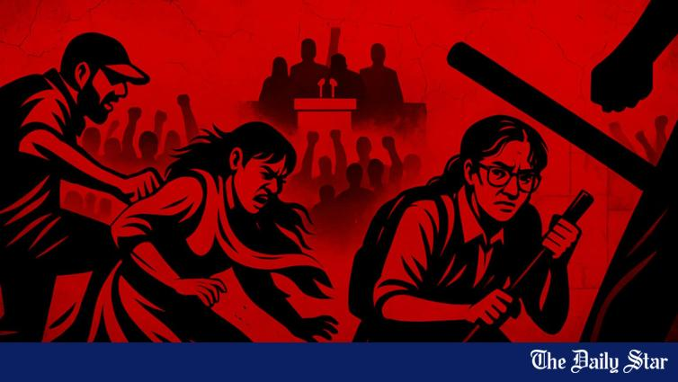
This was targeted violence, against women, by men who knew exactly what they were doing
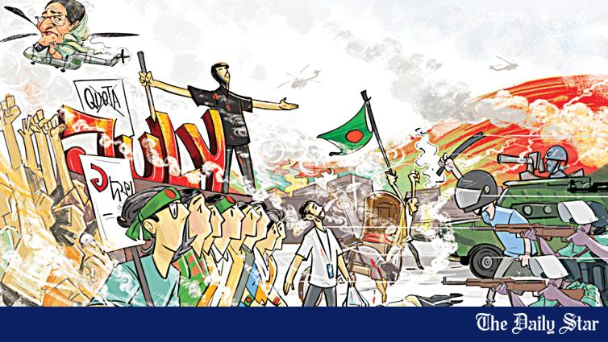
Both the previous government (Awami League) and opposition groups recruited, paid, and used children in violence during the July uprising, a United Nations Fact-Finding Mission has reported.
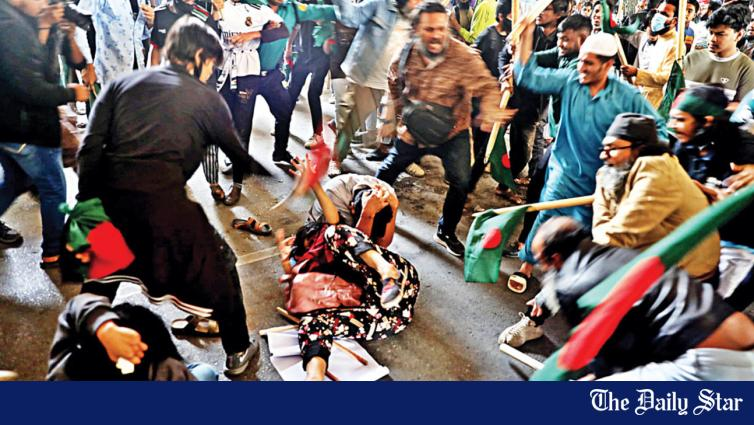
A month on, there is still no justice for violence against adivasis
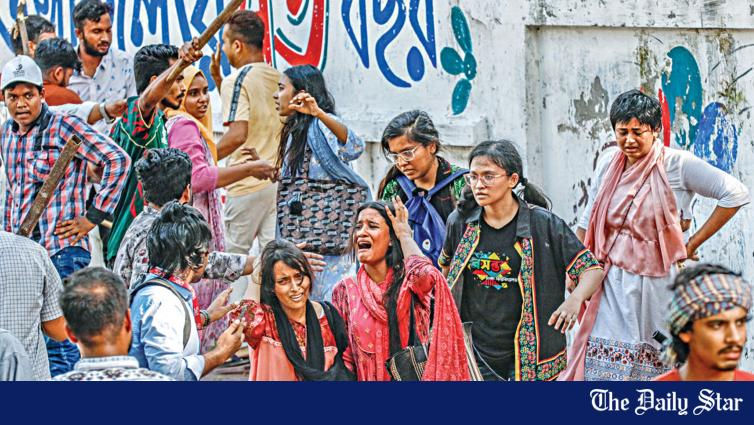
The United Nations fact-finding report has exposed disturbing accounts of gender-based violence during the July uprising last year, with women protesters facing physical assaults, rape threats, and arbitrary detention.
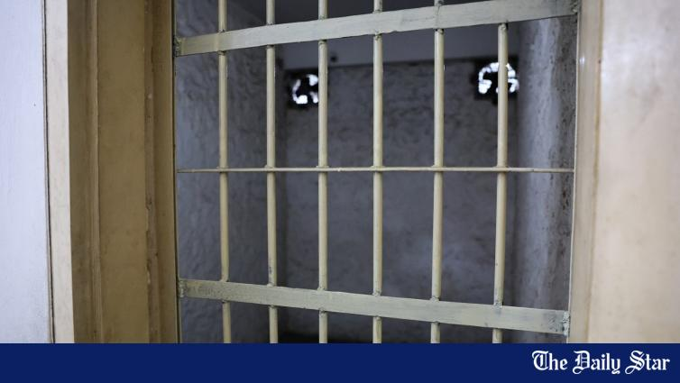
Enforced disappearances have long been a dark stain on Bangladesh's history, with Aynaghar standing as one of the most harrowing symbols of this systemic abuse.
In Joypurhat, a group of people stormed a football field and forced a women's match to be cancelled
Women compartments in metro trains are safeguarded by female police officials to ensure a safe and comfortable commute in an otherwise unsafe city for women.
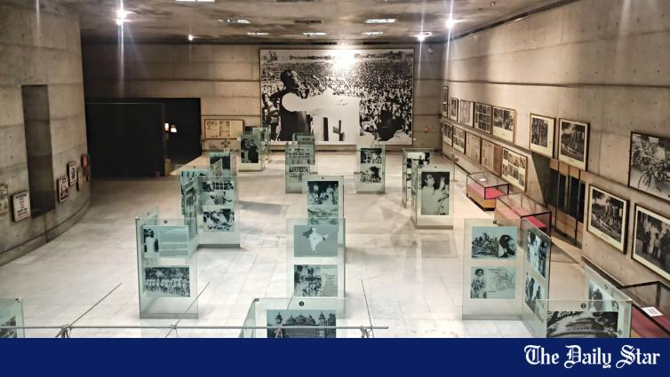
The word “Swadhinata” evokes a powerful image of Bangladesh’s journey to independence, and the Swadhinata Museum, located at Dhaka’s Suhrawardy Udyan is a testament to that journey, embodying the spirit of freedom.
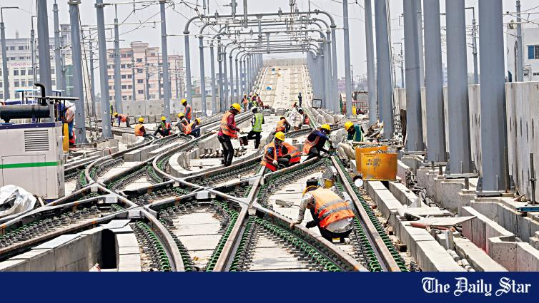
As the metro-rail train started its maiden journey yesterday afternoon, Swadhin Ahmed, a young man, had a wide smile on his face. In fact, it was a day of pride for Swadhin, who had been working for the metro-rail project for three years.
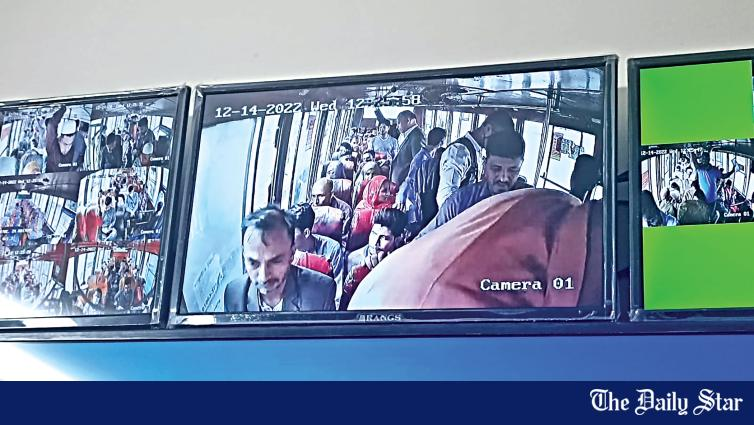
The instalment of CCTV cameras in city buses by the Ministry of Women and Children Affairs has generated a positive response among female commuters as well as bus staffers, as they believe the initiative has brought a change in the behavioural pattern of the overall commuters.
While the Bangladesh men’s team are currently participating in cricket’s biggest event -- the 2019 ICC Cricket World Cup -- in England, Bangladesh’s women cricketers have been toiling hard at the Shaheed Kamaruzzaman Divisional Stadium in Rajshahi ahead of their tour of South Africa